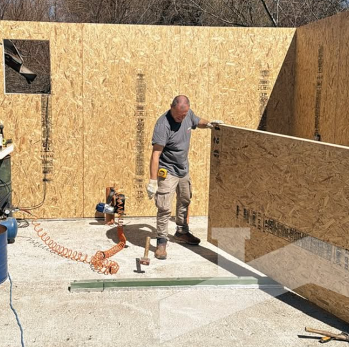
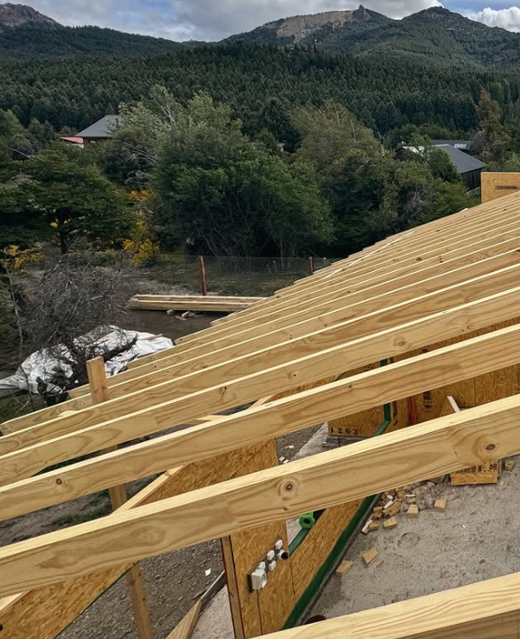

construccion
En All Terrain, trabajamos con paneles SIP que garantizan techos resistentes, aislación superior y estructuras preparadas para soportar la nieve sin perder eficiencia energética

Un techo construido con paneles SIP ofrece:
✅ Alta capacidad de carga, ideal para zonas con fuertes nevadas.
✅ Aislación térmica superior, que mantiene la temperatura interior estable y reduce el consumo energético.
✅ Rapidez y precisión en la instalación, gracias a su diseño modular.
✅ Durabilidad y hermeticidad, evitando filtraciones y mejorando la eficiencia de toda la construcción.
La tecnología SIP no solo garantiza techos preparados para soportar el peso de la nieve, sino que también asegura viviendas más cómodas, eficientes y sustentables en el tiempo 💪🏼
